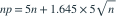

n份独立保单的赔款均为均值5的指数分布。用CLT使总保费覆盖总赔款的概率约95%，给定z₀.₉₅=1.645，每份保费约为？
- A
- B
- C
- D
我已思考，展开答案与解析
正确答案：C
- 总赔款均值5n、标准差5√n。令

，两边除以n。该近似适用于n较大。
易错提醒先明确分布参数、独立性和统计量的定义，再进行计算。
南审 813 · 2022 · 第2页 三·3；从大题提取考点并重写为单选
单选改编；题干与选项已重新编排
查看参考来源

，两边除以n。该近似适用于n较大。南审 813 · 2022 · 第2页 三·3；从大题提取考点并重写为单选
单选改编；题干与选项已重新编排
查看参考来源